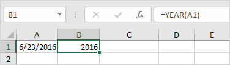
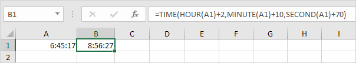
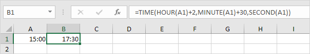

Tahun, Bulan, Hari (Year,
Month, Day)
Untuk mendapatkan tahun dari suatu tanggal, gunakan fungsi
YEAR.

Catatan: gunakan fungsi
MONTH dan
DAY untuk mendapatkan bulan dan hari dari suatu tanggal.
Fungsi Tanggal
-
Untuk menambahkan jumlah hari ke tanggal, gunakan rumus sederhana berikut.

-
Untuk menambahkan jumlah tahun, bulan dan/atau hari, gunakan fungsi
DATE.

Catatan: fungsi DATE menerima tiga argumen: tahun, bulan dan hari. Excel tahu bahwa 6 + 2 = 8 = Agustus memiliki 31 hari dan bergulir ke bulan berikutnya (23 Agustus + 9 hari
= 1 September).
Tanggal & Waktu Saat Ini
Untuk mendapatkan tanggal dan waktu saat ini, gunakan fungsi
NOW.

Catatan: gunakan fungsi
TODAY untuk memasukkan tanggal
hari ini di Excel.
Jam, Menit, Detik (Hour,
Minute, Second)
Untuk mengembalikan jam, gunakan fungsi HOUR.
Catatan: gunakan fungsi
MINUTE dan
SECOND untuk mengembalikan menit dan detik.
Fungsi Waktu
Untuk menambahkan jumlah jam, menit dan/atau detik, gunakan fungsi
TIME.

Catatan: Excel menambahkan 2 jam, 10 + 1 = 11 menit dan 70 - 60 = 10 detik.
DateDif
Download file
latihan
datedif.xlsx
Untuk mendapatkan jumlah hari, minggu atau tahun antara dua tanggal di Excel, gunakan fungsi
DATEDIF. Fungsi DATEDIF memiliki tiga argumen.
-
Isi "d" untuk argumen ketiga untuk mendapatkan jumlah hari di antara dua tanggal.

Catatan: =A2-A1 menghasilkan hasil yang sama persis!
-
Isi "m" untuk argumen ketiga untuk mendapatkan jumlah bulan di antara dua tanggal.

-
Isi "y" untuk argumen ketiga untuk mendapatkan jumlah tahun di antara dua tanggal.

-
Isi "yd" untuk argumen ketiga untuk mengabaikan tahun dan mendapatkan jumlah hari di antara dua tanggal.

-
Isi "md" untuk argumen ketiga untuk mengabaikan bulan dan mendapatkan jumlah hari di antara dua tanggal.
-
Isi "ym" untuk argumen ketiga untuk mengabaikan tahun dan mendapatkan jumlah bulan di antara dua tanggal.

Catatan penting: fungsi
DATEDIF mengembalikan jumlah lengkap hari, bulan atau tahun. Ini mungkin memberikan hasil yang tidak terduga ketika nomor hari/bulan dari tanggal kedua lebih rendah dari nomor
hari/bulan dari tanggal pertama. Lihat contoh di bawah ini.

Bedanya 6 tahun. Hampir 7 tahun! Gunakan rumus berikut untuk mengembalikan 7 tahun.

Tanggal hari ini (Today's Date)
Hari ini dan Sekarang | Tanggal dan Waktu Statis
Download file
latihan
todays-date.xlsx
Untuk memasukkan tanggal hari ini di Excel, gunakan fungsi
TODAY. Untuk memasukkan tanggal dan waktu saat ini, gunakan fungsi NOW. Untuk memasukkan tanggal dan waktu saat ini sebagai nilai statis, gunakan pintasan keyboard.
Hari ini dan Sekarang (Today and
Now)
-
Untuk memasukkan tanggal hari ini di Excel, gunakan fungsi
TODAY.

Catatan: fungsi
TODAY tidak membutuhkan argumen. Tanggal ini akan diperbarui secara otomatis saat Anda membuka buku kerja pada tanggal lain.
-
Untuk memasukkan tanggal dan waktu sekarang, gunakan fungsi
NOW.

Catatan: fungsi
NOW tidak membutuhkan argumen. Waktu ini akan diperbarui secara otomatis setiap kali lembar dihitung ulang. Ini terjadi saat Anda membuat perubahan ke sel mana pun atau saat Anda
membuka buku kerja. Tekan F9 untuk menghitung ulang buku kerja secara manual.
-
Untuk memasukkan waktu saat ini saja, gunakan
NOW()-TODAY() dan terapkan format waktu.

Catatan: tanggal disimpan sebagai angka di Excel dan menghitung jumlah hari sejak
0, Januari 1900. Waktu ditangani secara internal sebagai angka antara
0 dan 1. Kunjungi halaman kami tentang
format tanggal dan waktu untuk informasi selengkapnya.
Tanggal dan Waktu Statis
-
Untuk memasukkan tanggal saat ini sebagai nilai statis, tekan
Ctrl+; (titik koma).

Catatan: tanggal ini tidak akan berubah saat Anda membuka buku kerja pada tanggal lain.
-
Untuk memasukkan waktu saat ini sebagai nilai statis, tekan
Ctrl+Shift+;(titik koma).

Catatan: waktu ini tidak akan berubah saat Anda membuat perubahan ke sel atau saat Anda membuka buku kerja.
-
Untuk memasukkan tanggal dan waktu saat ini sebagai nilai statis, cukup tekan
Ctrl+; (titik koma), masukkan spasi dan tekan
Ctrl+Shift+;(titik koma).
Hitung Umur (Calculate Age)
Download file
latihan
hitung-umur.xlsx
Untuk menghitung usia seseorang di Excel, gunakan DATEDIF dan
TODAY. Fungsi DATEDIF memiliki tiga argumen.
-
Masukkan tanggal lahir ke dalam sel A2.

-
Masukkan fungsi TODAY ke sel B2 untuk mengembalikan tanggal hari ini.

-
Fungsi DATEDIF di bawah ini menghitung usia seseorang.

Catatan: isi "y" untuk argumen ketiga untuk mendapatkan jumlah tahun lengkap antara tanggal lahir dan tanggal hari ini.
-
Hitung usia seseorang tanpa menampilkan tanggal hari ini.

-
Hitung usia seseorang pada tanggal tertentu.
Catatan: fungsi
DATE menerima tiga argumen: tahun, bulan dan hari.
-
Hitung usia seseorang dalam tahun, bulan dan hari.

Catatan: isi "ym" untuk argumen ketiga untuk mengabaikan tahun dan mendapatkan jumlah bulan di antara dua tanggal. Isi "md" untuk argumen ketiga untuk mengabaikan
bulan dan mendapatkan jumlah hari di antara dua tanggal. Gunakan operator & untuk menggabungkan string.
Perbedaan waktu
Rumus Sederhana | Rumus Selisih Waktu | Selisih Waktu
dalam Jam
sebagai Nilai
Desimal | Lembar Waktu
Download file
latihan
perbedaan-waktu.xlsx
Menghitung perbedaan antara dua kali di Excel bisa jadi rumit. Waktu ditangani secara internal sebagai angka antara 0 dan 1.
Rumus Sederhana
Mari kita mulai dengan rumus sederhana yang menghitung selisih antara dua waktu di hari yang sama.
-
Cukup kurangi waktu mulai dari waktu akhir.

Catatan: AM digunakan untuk waktu malam dan pagi hari. PM digunakan untuk waktu pada sore dan malam hari. Ubah
format
Waktu untuk menampilkan waktu dengan atau tanpa AM/PM.
-
Ubah format angka nilai di sel A2, B2 dan C2 menjadi Umum.
Catatan: waktu ditangani secara internal sebagai angka antara 0 dan 1. Misalnya, pukul 06:00 direpresentasikan sebagai 0,25 (seperempat sepanjang hari).
Rumus Selisih Waktu
Rumus sederhana yang ditunjukkan di atas tidak berfungsi jika waktu mulai sebelum tengah malam dan waktu berakhir setelah tengah malam.
-
Waktu yang negatif ditampilkan sebagai ######.

-
Untuk melihat ini dengan jelas, ubah format angka dari nilai di sel A2, B2 dan C2 ke Umum.

-
Rumus Selisih Waktu di bawah ini selalu berhasil.

Penjelasan: jika waktu akhir lebih besar atau sama dengan waktu mulai, cukup kurangi waktu mulai dari waktu akhir. Jika tidak, tambahkan 1 (hari penuh) ke waktu akhir untuk menunjukkan waktu pada hari
berikutnya dan kurangi waktu mulai.
Perbedaan Waktu dalam Jam sebagai Nilai Desimal
Untuk menghitung selisih antara dua kali dalam jam sebagai nilai desimal, kalikan rumus sebelumnya dengan 24 dan ubah format angka menjadi Umum.
Rumus di bawah ini berhasil.

Lembar Waktu
Hitung total jam, jam reguler, dan jam lembur dengan kalkulator
absen kami.
Hari Kerja (Weekdays)
Fungsi hari kerja | Fungsi
hari
jaringan | Fungsi hari kerja
Download file
latihan
hari-kerja.xlsx
Pelajari cara mendapatkan hari dalam seminggu dari sebuah tanggal di Excel dan cara mendapatkan jumlah hari kerja atau hari kerja di antara dua tanggal.
Fungsi hari kerja
-
Fungsi WEEKDAY di Excel mengembalikan angka dari 1 (Minggu) hingga 7 (Sabtu) yang mewakili hari dalam seminggu dari suatu tanggal. Ternyata, 18/12/2017 jatuh pada hari Senin.

-
Anda juga dapat menggunakan fungsi
TEXT untuk menampilkan hari dalam seminggu.

-
Atau buat format
tanggal khusus ( dddd ) untuk menampilkan hari dalam seminggu.

Fungsi Networkdays
-
Fungsi NETWORKDAYS mengembalikan jumlah hari kerja (tidak termasuk akhir pekan) di antara dua tanggal.

-
Jika Anda memberikan daftar hari libur, fungsi
NETWORKDAYS mengembalikan jumlah hari kerja (tidak termasuk akhir pekan dan hari libur) di antara dua tanggal.

Kalender di bawah ini membantu Anda memahami fungsi
NETWORKDAYS.

-
Tanggal disimpan sebagai angka di Excel dan menghitung jumlah hari sejak 01 Januari 1900. daripada menyediakan daftar, berikan konstanta array dari angka yang mewakili tanggal ini. Untuk mencapai ini,
pilih E1:E2 dalam rumus dan tekan F9.

Fungsi hari kerja
Fungsi WORKDAY adalah (hampir) kebalikan dari fungsi
NETWORKDAYS. Ini mengembalikan tanggal sebelum atau setelah jumlah hari kerja tertentu (akhir pekan tidak termasuk).

Catatan: fungsi
WORKDAY mengembalikan nomor seri tanggal. Terapkan
format Tanggal untuk menampilkan tanggal.
Kalender di bawah ini membantu Anda memahami fungsi
WORKDAY.

Sekali lagi, jika Anda memberikan daftar hari libur, fungsi
WORKDAY mengembalikan tanggal sebelum atau setelah jumlah hari kerja tertentu (tidak termasuk akhir pekan dan hari libur).
Hari menjelang Ulang Tahun
Download file
latihan
hari-sampai-ulang
tahun.xlsx
Untuk menghitung jumlah hari hingga ulang tahun Anda di Excel, jalankan langkah-langkah berikut.
-
Masukkan tanggal lahir ke dalam sel A2.

-
Masukkan fungsi TODAY ke sel B2 untuk mengembalikan tanggal hari ini.

-
Bagian tersulit untuk mendapatkan jumlah hari sampai ulang tahun Anda adalah menemukan ulang tahun Anda berikutnya. Rumus di bawah ini berhasil.

Penjelasan: Fungsi
DATE menerima tiga argumen: tahun, bulan dan hari. Kami menggunakan fungsi
DATEDIF untuk menemukan jumlah tahun lengkap ("y") antara Tanggal Lahir dan Hari Ini.
DATEDIF(A2,B2,"y") sama dengan 38. Jika 38 tahun penuh telah berlalu sejak tanggal lahir Anda (dengan kata lain, Anda telah merayakan ulang tahun ke-38), ulang tahun Anda
berikutnya adalah 38 + 1 = 39 tahun setelahnya tanggal lahirmu.
-
Selanjutnya, kita menggunakan fungsi DATEDIF untuk mencari jumlah hari ("d") antara Hari Ini dan Ulang Tahun Berikutnya.

Hari Terakhir Bulan Ini
Download file
latihan
hari-terakhir-bulan-ini.xlsx
Untuk mendapatkan tanggal hari terakhir bulan di Excel, gunakan fungsi
EOMONTH (Akhir Bulan.
-
Misalnya, dapatkan tanggal hari terakhir bulan ini.

Catatan: fungsi
EOMONTH mengembalikan nomor seri tanggal. Terapkan
format Tanggal untuk menampilkan tanggal.
-
Misalnya, dapatkan tanggal hari terakhir bulan berikutnya.
-
Misalnya, dapatkan tanggal hari terakhir bulan berjalan - 8 bulan = 6 - 8 = -2 = Oktober (-2 + 12 = 10), 2015!

Tambah atau Kurangi Waktu
Tambahkan Jam,
Menit, dan
Detik | Tambahkan Waktu | Kurangi Menit | Perbedaan
waktu
Download file
latihan
tambah-kurang-waktu.xlsx
Gunakan fungsi TIME di Excel untuk menambah atau mengurangi jam, menit dan detik. Untuk menambahkan waktu di Excel, cukup gunakan fungsi
SUM.
Tambahkan Jam, Menit, dan Detik
Ingat, untuk memasukkan waktu, gunakan ":" (titik dua).
-
Masukkan waktu ke dalam sel A1.

-
Untuk menambahkan 2 jam 30 menit ke waktu ini, masukkan rumus yang ditunjukkan di bawah ini.

Penjelasan: fungsi
TIME memiliki 3 argumen. Pertama, gunakan
HOUR,
MINUTE dan SECOND untuk membuat waktu yang dimasukkan di sel A1. Selanjutnya, tambahkan 2 jam
30 menit.
Untuk mengubah format Waktu, jalankan langkah-langkah berikut.
- Pilih sel B1.
- Klik kanan, lalu klik Format
Cells (atau tekan Ctrl+1).
-
Dalam daftar Kategori, pilih Waktu, lalu pilih format Waktu.

-
Klik Oke.

-
Masukkan waktu ke dalam sel A1 (gunakan
2 titik dua untuk memasukkan detik).

-
Untuk menambahkan 10 detik ke waktu ini, masukkan rumus yang ditunjukkan di bawah ini.

Catatan: kami mengubah format Waktu menjadi
13:30:55 (lihat langkah 5).
Tambahkan Waktu
Untuk menambahkan waktu di Excel, cukup gunakan fungsi
SUM. Untuk menampilkan total lebih dari
24 jam, ubah format Waktu.
-
Misalnya, tugas A membutuhkan 8 jam untuk diselesaikan, tugas
B membutuhkan 4 jam dan
30 menit untuk diselesaikan, dll.

-
Untuk menghitung total durasi, cukup gunakan fungsi
SUM.

-
Ubah durasi tugas D dari 5 jam menjadi
7 jam.

Untuk menampilkan total lebih dari 24 jam, jalankan langkah-langkah berikut.
- Pilih sel B6.
- Klik kanan, lalu klik Format Cells (atau
Ctrl+1).
- Pilih kategori Kustom.
-
Ketik kode format angka berikut: [h]:mm
-
Klik Oke.

Catatan: kunjungi halaman kami tentang format Tanggal dan
Waktu untuk mempelajari lebih lanjut tentang topik ini.
Kurangi Menit
Untuk mengurangi jam, menit, atau detik dari suatu waktu, gunakan fungsi
TIME (dan
HOUR, MINUTE dan
SECOND).
-
Masukkan waktu ke dalam sel A1.

-
Untuk mengurangi 33 menit dari waktu ini, masukkan rumus yang ditunjukkan di bawah ini.

Perbedaan waktu
Menghitung perbedaan antara dua kali di Excel bisa jadi rumit.
-
Untuk menghitung selisih antara dua waktu di hari yang sama, cukup kurangi waktu mulai dari waktu berakhir.

Catatan: kami mengubah format Waktu menjadi
13:30 (lihat langkah 5 di bawah "
Tambahkan Jam, Menit, dan
Detik").
-
Rumus sederhana ini tidak bekerja jika waktu mulai sebelum tengah malam dan waktu berakhir setelah tengah malam. Waktu
Perbedaan rumus di bawah ini selalu bekerja.

-
Rumus di bawah ini menghitung selisih antara dua kali dalam jam sebagai nilai desimal.

Catatan: kunjungi halaman kami tentang Perbedaan Waktu untuk memahami logika di balik rumus ini.
Quarter
Download file
latihan
quarter.xlsx
Rumus mudah yang mengembalikan kuartal untuk tanggal tertentu. Tidak ada fungsi bawaan di Excel yang dapat melakukan ini.
-
Masukkan rumus yang ditunjukkan di bawah ini.

Penjelasan:
ROUNDUP(x,0) selalu membulatkan x ke atas ke bilangan bulat terdekat. Fungsi
MONTH mengembalikan nomor bulan dari suatu tanggal. Dalam contoh ini, rumus dikurangi menjadi
ROUNDUP=(5/3,0),
ROUNDUP=(1.666667,0), 2. Mei ada di Kuartal 2.
-
Mari kita lihat apakah formula ini bekerja untuk semua bulan.
Penjelasan: sekarang tidak sulit untuk melihat bahwa tiga nilai (bulan) pertama di kolom
B dibulatkan menjadi 1 (Kuartal
1), tiga nilai (bulan) berikutnya di kolom
B dibulatkan menjadi 2 (Kuartal
2), dst .
Hari Dalam Setahun (Day of the
Year)
Download file
latihan
hari-dalam-setahun.xlsx
Rumus mudah yang mengembalikan hari dalam setahun untuk tanggal tertentu. Tidak ada fungsi bawaan di Excel yang dapat melakukan ini.
-
Untuk mendapatkan tahun dari suatu tanggal, gunakan fungsi
YEAR.

-
Gunakan fungsi DATE di bawah ini untuk mengembalikan 1 Januari 2016. Fungsi
DATE menerima tiga argumen: tahun, bulan, dan hari.

-
Rumus di bawah ini mengembalikan hari dalam setahun.

Penjelasan: tanggal dan waktu disimpan sebagai angka di Excel dan menghitung jumlah hari sejak
0, 1900 Januari. 23 Juni 2016 sama dengan
42544. 1 Januari 2016 sama dengan
42370. Mengurangi angka-angka ini dan menambahkan
1 menghasilkan hari dalam setahun.
42544 - 42370 +
1 = 174 + 1 =
175.